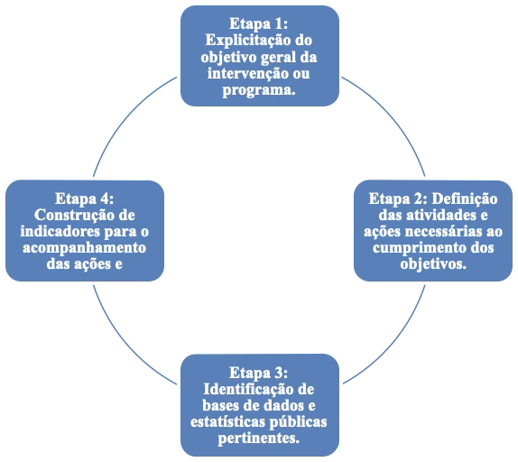
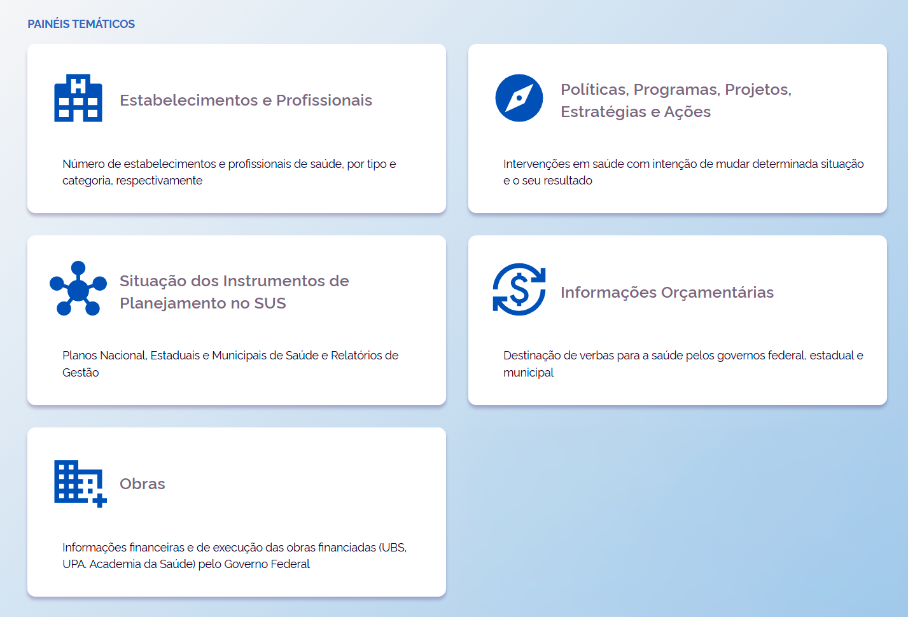
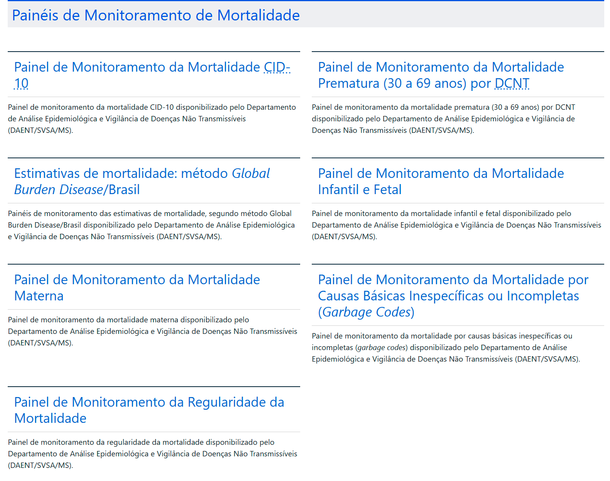

Módulo 3 | Aula 2
Painéis e sistemas de indicadores
Painéis de indicadores
A utilização de indicadores desempenha um papel essencial nos processos de monitoramento e gestão em saúde, permitindo acompanhar intervenções, programas e políticas de maneira estruturada e contínua. É nesse contexto que se inserem os painéis de indicadores, cuja compreensão é fundamental para o desenvolvimento de análises consistentes e para o aprimoramento da gestão pública. Os painéis organizam informações estratégicas que orientam decisões e qualificam a atuação dos gestores em diferentes níveis do sistema de saúde.
Os painéis de indicadores são, em geral, conjuntos de indicadores utilizados em processos de monitoramento e gestão, com foco em alguma lógica de intervenção, programa ou política. A elaboração de um painel de indicadores parte de etapas que vão desde a definição do objetivo do painel, seleção das bases até o cálculo dos indicadores.
Etapas para a construção de um painel de indicadores
Para definir os indicadores, parte-se, sobretudo, dos objetivos da intervenção, conforme disposto na figura a seguir.
Figura 1 — Etapas da construção de um painel de indicadores.

Fonte: Elaboração própria a partir de Jannuzzi (2024).
Caso o objetivo seja construir painéis de indicadores de monitoramento de programas, em seguida os mesmos podem ser estruturados conforme os níveis a seguir (Jannuzzi, 2016):
- Nível 1: Painel de indicadores-chave — indicadores referentes aos macroprocessos e resultados estratégicos do programa
- Nível 2: Painel de indicadores complementares — indicadores que apoiam a interpretação dos indicadores-chave
- Nível 3: Painel de indicadores de contexto — indicadores que ajudam a entender os indicadores dos níveis anteriores, e as relações na lógica de intervenção do programa
Exemplos de painéis de indicadores
I — Sala de Apoio à Gestão Estratégica (SAGE)
A Sala de Apoio à Gestão Estratégica (SAGE) é uma ferramenta da Secretaria de Informação e Saúde Digital do Ministério da Saúde (SEIDIGI/MS) que disponibiliza informações para subsidiar a gestão na tomada de decisão nas diferentes esferas. A SAGE hospeda diferentes painéis temáticos, com informações estratégicas para a saúde, a exemplo dos exibidos na figura a seguir. Visite a página da SAGE para explorar as informações apresentadas.
Figura 2 — Painéis temáticos da Sala de Apoio à Gestão Estratégica.

Fonte: SAGE.
II — Painéis de monitoramento de mortalidade e natalidade
O Departamento de Análise Epidemiológica e Vigilância de Doenças Não Transmissíveis da Secretaria de Vigilância em Saúde e Ambiente do Ministério da Saúde dispõe de painéis de monitoramento tanto de mortalidade quanto de natalidade.
Figura 3 — Painéis de monitoramento de mortalidade.

Fonte: https://svs.aids.gov.br/daent/centrais-de-conteudos/paineis-de-monitoramento/mortalidade/
Consulte também o painel de monitoramento de natalidade.